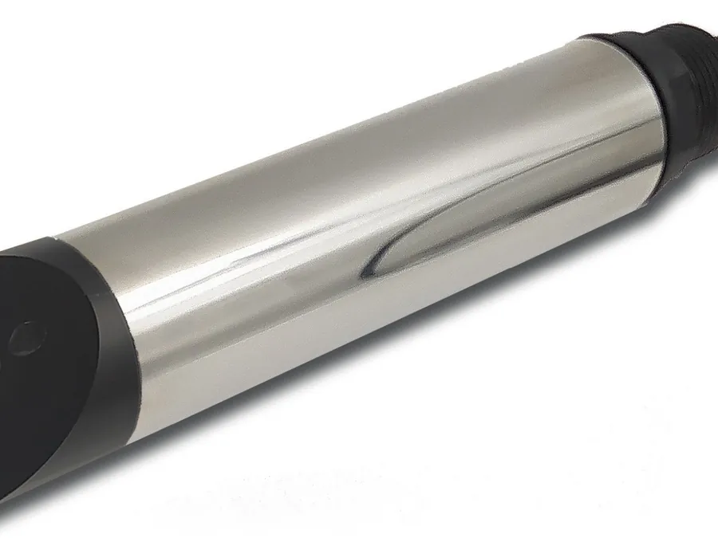

Qualité de l’eau · Physico-chimie
Sondes et transmetteursCapteurs et transmetteurs physico-chimiques
Une gamme de capteurs pour suivre en continu la qualité de l’eau, du captage au rejet, et les transmetteurs qui les raccordent, les étalonnent et affichent leurs valeurs. Six paramètres : pH et redox, oxygène dissous, conductivité, turbidité, MES et chlore.
- Paramètres
- pH, redox, O₂, conductivité, turbidité, MES, chlore
- Oxygène dissous
- 0 à 20 mg/L, optique
- Turbidité
- 0 à 4 000 NTU, ISO 7027
- Sorties
- 4-20 mA · Modbus RTU
Idéal pour
- Eau potable
- Traitement biologique
- Eaux usées
- Process industriel
- Suivi en continu
LeasingDisponible à l’achat ou en leasing, par mensualités. Comment ça marche
Points forts
Des capteurs adaptés à chaque eau, et un transmetteur choisi selon le nombre de mesures.
- Oxygène optiqueMesure par luminescence, sans pièce mobile ni circulation d’eau.
- Turbidité normaliséeInfrarouge diffusé à 90°, selon ISO 7027, de 0 à 4 000 NTU.
- Capteurs numériquesSortie Modbus RTU, raccordement direct sur les transmetteurs numériques.
- Analyseur de chlorePhotométrie en ligne, étalonnage à chaque cycle, contrôle des réactifs.
- Transmetteurs analogiques ou numériquesDe 1 à 4 capteurs, sorties 4-20 mA, relais et Modbus.
- Accessoires d’installationCannes d’immersion, insertion sur conduite, porte-sondes en ligne.
Principe de mesure
Chaque paramètre a sa méthode : électrode en verre pour le pH et le redox, électrodes de conductivité, luminescence pour l’oxygène dissous, lumière infrarouge diffusée à 90° pour la turbidité et les MES, photométrie pour le chlore.
Le capteur mesure ; le transmetteur raccorde les capteurs, permet leur étalonnage, affiche les valeurs et les transmet en 4-20 mA ou en Modbus à l’automate ou à la supervision.
- Transmetteur analogique : 1 ou 2 capteurs et la température
- Transmetteur numérique : 2 à 4 capteurs, écran couleur, enregistrement
- Capteurs en immersion, en insertion ou en ligne
Applications
Pour le suivi en continu de la qualité de l’eau.
- Eau potablepH, chlore, turbidité et conductivité, de l’usine au réseau de distribution.
- Traitement biologiqueOxygène dissous des bassins d’aération, MES des boues.
- Eaux usées et rejetspH, redox, conductivité et turbidité en entrée et en sortie.
- Process industrielEau de process, déminéralisation, eaux chargées.
Caractéristiques
Principaux capteurs de la gamme ; d’autres versions sur demande.
| pH et redox | Électrode en verre, 0 à 14 pH, ± 0,05 pH ; version numérique Modbus RTU avec température |
|---|---|
| Conductivité | Immersion 0 à 20 000 µS, en ligne 1 à 200 µS/cm, ou inductive jusqu’à 1 000 mS/cm |
| Oxygène dissous | Optique par luminescence, 0 à 20 mg/L, ± 0,2 mg/L, Modbus RTU ou 4-20 mA |
| Turbidité | Infrarouge diffusé à 90°, ISO 7027, 0 à 1 000 ou 4 000 NTU |
| Matières en suspension | Optique, 0 à 30 g/l, ± 0,3 g/l |
| Chlore | Analyseur photométrique en ligne : chlore libre, total et combiné |
| Analogique | 1 ou 2 capteurs + température, 2 sorties 4-20 mA, 4 relais, Modbus RTU, mural IP65 ou encastré 96 × 96 |
|---|---|
| Numérique | 2 à 4 capteurs numériques, écran couleur, enregistreur de 250 000 valeurs, 4-20 mA et Modbus RTU |
| Raccordement | Capteurs numériques en Modbus RTU ; électrodes analogiques via numériseur |
| Protection | IP65 à IP66 selon le modèle |
Fourniture
- Cannes d’immersion pour oxygène dissous, pH et redox
- Montage en insertion sur conduite DN 40 pour turbidité et MES, extraction sans arrêt
- Porte-sondes en ligne et supports de bypass
Téléchargements
Questions fréquentes
Les questions que nous posent le plus souvent les exploitants et les bureaux d’études.
Quels paramètres peut-on mesurer ?
Le pH et le redox, l’oxygène dissous, la conductivité, la turbidité, les matières en suspension et le chlore.
Quelle différence entre un capteur et un transmetteur ?
Le capteur mesure. Le transmetteur raccorde les capteurs, permet leur étalonnage, affiche les valeurs et les transmet à l’automate en 4-20 mA ou en Modbus.
Comment est mesuré l’oxygène dissous ?
Par une méthode optique de luminescence : pas de membrane à remplacer, aucune pièce mobile, pas besoin de circulation d’eau.
Comment choisir le transmetteur ?
Selon le nombre de capteurs et leur type : analogique pour 1 ou 2 capteurs simples, numérique pour 2 à 4 capteurs avec enregistrement. Votre interlocuteur compose l’ensemble avec vous.